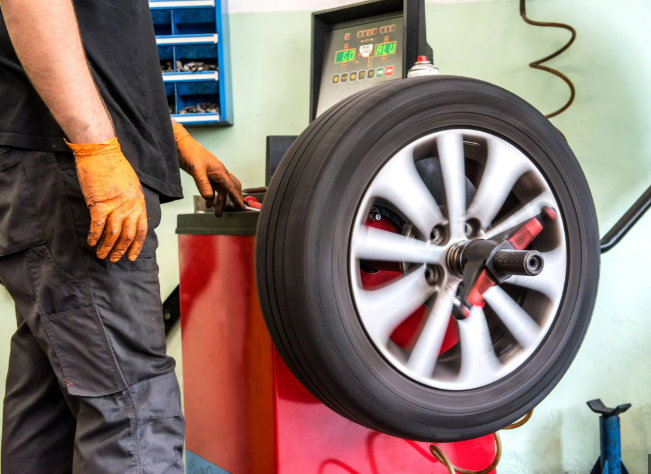
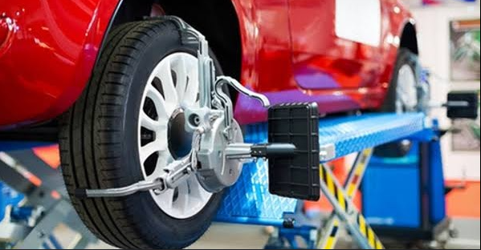

Bem-vindo à Borracharia Paulo Marques!
Seu pneu furou? Relaxa, a gente resolve! Aqui é serviço rápido, no capricho e com aquele atendimento raiz que você respeita.
Se você está procurando por uma borracharia de confiança, com atendimento rápido e especializado em troca de pneus, você está no lugar certo. A Borracharia Paulo Marques atende veículos de passeio, utilitários e motos, sempre com agilidade, qualidade e preço justo.

Troca de pneus na hora, com serviço profissional
Oferecemos troca de pneus furados, remendo a quente e a frio, conserto de câmara de ar, e muito mais. Nosso serviço é rápido e eficiente, ideal pra quem precisa seguir viagem sem perder tempo. Também realizamos balanceamento de rodas e alinhamento, garantindo total segurança e estabilidade pro seu veículo.

Equipe experiente e atendimento de qualidade
Nossos profissionais têm anos de experiência no ramo. Trabalhamos com equipamentos modernos e ferramentas específicas para pneus de aro 13 a 20. Aqui, você encontra um serviço honesto, com explicações claras e atendimento humanizado.

Preços justos e honestos
A gente sabe que imprevisto com pneu já é um estresse. Por isso, aqui você tem orçamento sem compromisso, formas de pagamento facilitadas, e total transparência no serviço prestado. Sem pegadinhas, sem enrolação